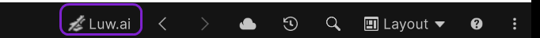
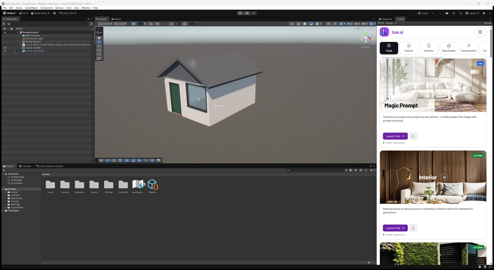
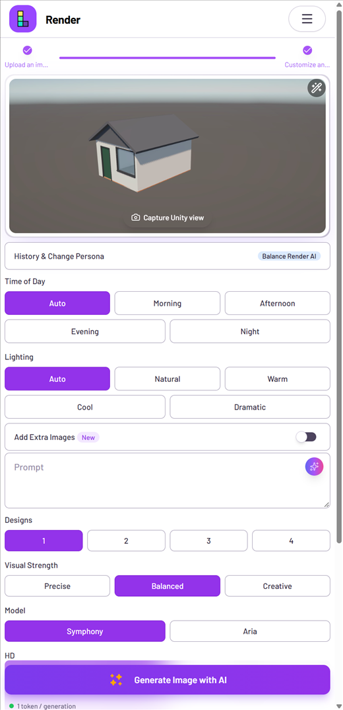
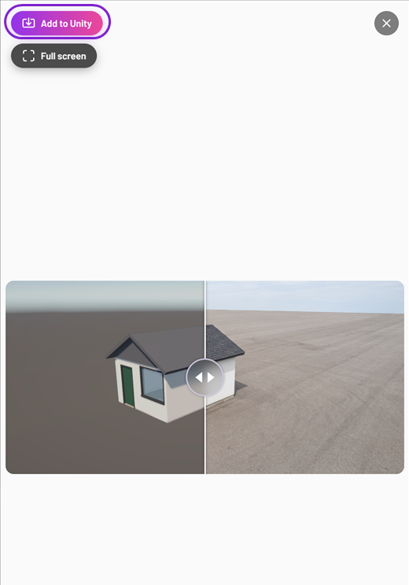
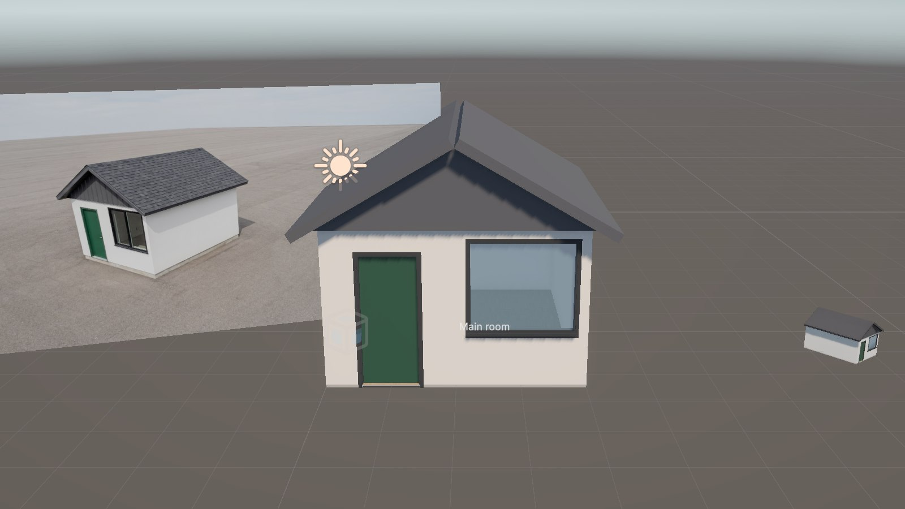
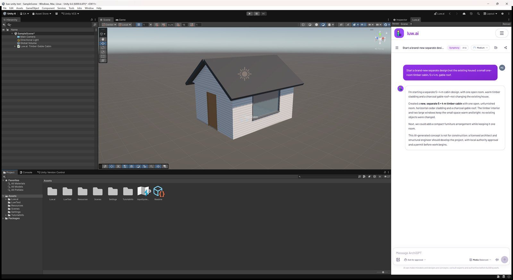

Design a building by talking to ArchiGPT and watch it appear in your Unity scene. Then render it, right inside the Unity editor. No export, no extra app.
Luw.ai × Archiagent.ai in Unity: a hand-drawn plan becomes a furnished, textured villa with a garden, then renders of the view and of every room.
What you need
Unity 6 (6000.0 or later) on Windows 10 or 11, 64-bit. Tested on Unity 6.0 LTS and Unity 6.6. The Universal Render Pipeline (URP), HDRP and the Built-in pipeline all work.
A Luw.ai account. Each render uses tokens from your account: 1 token for one image.
An internet connection. The renders are made on Luw.ai's servers. The first install needs it too: the package brings glTFast, Unity's glTF importer, and Unity's Package Manager adds it from Unity's registry.
Microsoft Edge WebView2 Runtime. Windows 10 and 11 usually have it already.
The Luw.ai package:Luw.ai-Unity.tgz. Download it here and save it where it can stay.
Install the package
Open your project in Unity.
Choose Window › Package Manager.
Click the + button at the top left and choose Install package from tarball…
Choose the file Luw.ai-Unity.tgz you downloaded and click Open.
Unity imports Luw.ai and glTFast. Wait until it finishes compiling.
Keep the file where it is. Unity installs the package from that path. If you want your project to carry it, move Luw.ai-Unity.tgz into the project folder first, then install it from there.
Open Luw.ai and sign in
Click the Luw.ai button at the right of Unity's main toolbar. Or choose Window › Luw.ai, or Tools › Luw.ai › Open Luw.ai, in Unity's menu bar.

The first time, the Luw.ai panel opens as a tab beside the Inspector (or the Hierarchy when there is no Inspector). It is the Luw.ai web app, made to work with Unity. Drag the tab anywhere, like any Unity window: it can float or be maximized too. Close the tab and the page keeps running: open it again and it is as you left it.

The Luw.ai panel, docked in the Unity editor.
The thin bar at the top of the panel has Render: choose Scene to render the Scene view's camera, or Game to render the Game view's camera. Reload loads the panel again.
First time only: click Sign in with Luw.ai in the panel. Your browser opens: approve, then come back to Unity. One sign-in covers every Luw.ai plugin on your computer, so next time the panel opens ready to use.
Typing in the panel: while you type in the panel, Unity's shortcuts (W, E, R, Delete, Ctrl+Z and the others) are off, so your words don't turn into commands. Copy, paste and undo work in the panel's text boxes.
Get your first render
Set up your view. Frame the Scene view until you like the picture. What you see is what Luw.ai renders, without gizmos or the grid, with post-processing as the Scene view shows it. To render the Game view's camera instead, choose Game next to Render at the top of the panel.
Tip: materials and lights in your scene give better renders than plain grey objects.
Click Render AI on the panel's home page: your Unity view is already in it. You don't need to save or export anything.

Moved the camera? Click Capture Unity view on the picture to take the new view.
Choose options if you like: Time of Day, Lighting, or a short Prompt such as “golden hour, warm light on the terrace”. Or leave them on Auto.
Click Generate Image with AI. One image uses 1 token. Your render is ready in about a minute. Click it to open it.
Compare and keep it. Drag the slider to compare the render with your view, then click Add to Unity at the top left.

That's it. The render is now in your scene: a picture standing upright at the Scene view's pivot, on the surface below it, facing the camera. It is unlit and has no collider. To remove it, press Ctrl+Z once. The image and its material are kept in your project under Assets/Luw.ai/Renders.

Your render standing in the scene, and a 3D AI model next to it.
More tools
Open the menu (☰) at the top of the panel for more tools, such as interiors, exteriors, sketch to render and video. Most tools start with your Unity view. With 3DGen AI you get a 3D model, and Add to Unity brings it into your scene: at the Scene view's pivot on the surface below, its front to the camera, 1 m on its largest side, with a Mesh Collider. One Ctrl+Z removes it. The model is kept in your project under Assets/Luw.ai/Models.
Design a building with ArchiGPT
ArchiGPT is Luw.ai's design assistant. In Unity it builds what you describe straight into your scene, as ordinary GameObjects with real meshes, while you watch.
Open ArchiGPT from the home page of the Luw.ai panel.
Say what you want. Describe the building, or attach a photo of a plan you drew on paper and write something like “Apply this floorplan as a small house.” ArchiGPT builds it in Unity: walls, floors, the roof, doors and windows, stairs, rooms, furniture. In the Hierarchy it is one object, Luw.ai: and the design's name, with a group for each kind: Walls, Slabs, Ceilings, Roof, Doors, Windows, Glass, Stairs, Columns, Fences, Rooms and Furniture.

The cabin in Unity, and the conversation that built it.
Change it by talking. “Give it a 35° gable roof”, “make the living room bigger”. Only what changed is rebuilt. Select something in Unity first and ArchiGPT knows what “this” means. It knows your own objects too: “move the cube I made 2 m east”, “what else is in the scene?” Ask it to copy, rotate, scale, hide or lock objects, measure (“how long is this wall?”), cut a section (“cut the view at 1.2 m”), set the sun (“sun for 21 June at 17:00 in Istanbul”) or save the view.
Hide and lock: ArchiGPT uses the Scene view's visibility and picking toggles, so Play mode and your builds are not affected.
Change it yourself, too. Move or delete what ArchiGPT built, or add objects of your own, whenever you like. When ArchiGPT builds again, what you moved or deleted stays as you left it.
Add materials. “Light oak floors, white plaster walls, a dark grey metal roof.” ArchiGPT paints the model and lays textures on it. The materials and textures are kept in your project under Assets/Luw.ai/Materials and Assets/Luw.ai/Textures, the furniture models under Assets/Luw.ai/Furniture.
Render it. Frame a view in the Scene view and ask for a render. ArchiGPT shows what it will cost and waits for your Approve. Click a result to see it full size in a large window over Unity (Esc closes it), or put it in your scene with Add to Unity.
Undo: each change ArchiGPT makes in Unity is one step. Press Ctrl+Z to take it back, or ask ArchiGPT to undo.
Ready for Play mode: walls, slabs, ceilings, roofs, stairs, columns, fences and glass get Mesh Colliders, and what ArchiGPT builds is marked Static. Luw.ai's tags on the built objects are removed from player builds automatically.
Help
I don't see Luw.ai in the Window menu.
Wait until Unity finishes importing and compiling. Then choose Window › Package Manager and check that Luw.ai is in the list. If it is not, install it again from Luw.ai-Unity.tgz.
Luw.ai stopped loading after I moved the .tgz file.
Unity installs the package from the path you chose. Put the file back, or install it again from its new place.
The panel is empty or doesn't load.
Luw.ai needs the internet and the Microsoft Edge WebView2 Runtime. Check your connection, install the WebView2 Runtime if the panel says it is missing, then click Reload at the top of the panel.
The picture in the panel is an old view.
Click Capture Unity view on the picture.
Unity's shortcuts don't work.
They are off while you type in the panel. Click in the Scene view, and they work again.
Something went wrong.
Send us the file %LOCALAPPDATA%\Luw.ai\logs\plugin.log.
How do I remove the package?
Choose Window › Package Manager, select Luw.ai and click Remove. What Luw.ai added to your scene and to Assets/Luw.ai stays.